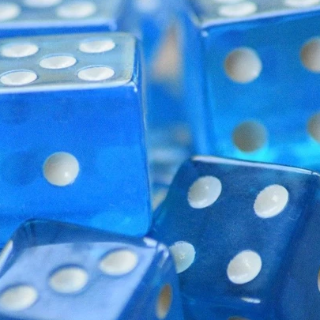

Guy
Character Sheet

Hobbies:
- 🍄Mushroom Hunting: During the fall and spring I like to go out on walks in the forest and look for
mushrooms.
Only ate one so far and it was a puffball mushroom. Really delicious and looking for more!
- ♟️Chess: Currently ~1300 elo on lichess but planning on actually studying chess soon to raise my rank
to at
least 1500!
- 🏐Volleyball: Honestly pretty amature at volleyball and can't do anything more advanced than an
overhand serve
at about a 50% consistancy. Hoping to play more in the future though.
- 🥊Boxing: Went to a gym with the downstairs dedicated to MMA and practiced everything a little bit.
BJJ,
kickboxing, judo, but nothing really beats boxing for me.
- 🧱Tetris: No competition against any normal casual person who's played tetris a few times in their
life but kind of middle of the pack in the world of people who actually play tetris. 41.7s 40 line record
which is technically top 5% on jstris but still means there's 7783 people better than me which means I'm not
winning any tournaments anytime soon.
- 🎲Board Games: I never really thought of this as a hobby. Thought everyone was into board games and
it was sometime people did as casually as watching TV. But apparently not. Anyways I've enjoyed "Splendor",
and "Red Rising" a lot. I tried to play wingspan but it was so incredibly complicated and the board took
nearly half an hour to set up at which point the group decided to just go get lunch.
- 🎮Video Games: As a guy in tech I am legally obligated to play video games. I was a hardcore gamer in
my younger days and played everything avalible on PC. The only genre I couldn't get into was grand strategy.
Was on a comp TF2 team, had over 1000 hours on CSGO but I just jumped around with a bizon so I never really
got that good but it was very fun and I was accused of hacking a few times. I now mostly play valorant
socially. Oh also I quit league of legends, not because it was toxic but because it was too addictive.
- 🥽VR: I got a Quest 2 before the price hike. I mostly play Onward if anything since I could never
figure out how to enjoy VRChat. I tried to use the headset for work but the resolution's still a bit too low
to use it comfortably.
- 💪Working Out: I started weightlifting back in high school since we actually had a really nice weight
room. Funny story, I had it the first semester but got regular gym after that so I tried transfering.
Something got mixed up though and I was put in yoga. I walk into class to tell the teacher that I wanted
weightlifting when they greeted me right away. I thought it was strange they knew me immedietly. Then I
looked at the students which were 100% girls. Turns out yoga was a girls only class. I quickly got out of
there to talk to the office and my class got changed back to weightlifting the next day. Anyways I do
homegym now with dumbbells.
- 🤺Fencing: I enjoyed it for a month or so but it's kind of an expensive hobby and I stopped going
after a while. I wasn't half bad at epee and would like to fence again someday.
- 📷Photography: Just now getting into photography with a cheap canon rebel. It really is incredible
how
much better you can shoot on a proper camera than a phone. Currently reading "Understanding Exposure" and
"The Photographer's Eye" to learn more about it. Would love to find people to go on photoshoots with.
- 📝Writing: While I haven't worked on my novel in a while(it's an anthology set in a world where
different methods of death move you along a 2d multiversal grid) I have written a lot. I listen to a lot of
video essays and read a lot of internet content and books. And when I want to organize my thoughts I create
documents to do so.
Why the website name?
It's from a video I saw. Some guy checked out of a gas station on a card machine but instead of it saying the
normal "Have a good day!" or something of the sort, on a weekend evening at the ripe old hour of 7pm or so it
said "Have the best day of your life!". And it was funny to me and also captures mindfullness and carpe diem in
a nice way so I was surpised when the domain wasn't taken and I registered it.